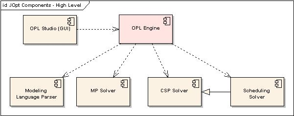

| jOpt | ||
| Java OPL Implementation |
| jOpt | ||
| Java OPL Implementation |
Optimization Programming LanguageOPL is a modeling language for combinatorial optimization problems created by Pascal Van Hentenryck. It combines mathematical programming and constraint programming into a single language.Linear programming, integer programming, and combinatorial optimization problems are useful for many practical applications including planning, scheduling, sequencing, resource allocation, vehicle routing, design, and configuration. However, many of the problems are considered NP-complete (essentially, incredibly difficult) and no general solution can be applied to solve all of them. Each problem requires considerable work to both model the problem accurately and create an algorithm to solve it. OPL allows a developer to create model representations of linear programming, integer programming, and constraint programming problems. Models can also include high-level support for scheduling and resource applications. Variations of models for the same problem can be created with data that can be defined seperately and plugged into the problem. OPL can then be used to search for possible solutions to problems or for the best (optimal) solution based on some criteria. OPL ComponentsOPL consists of a number of modules:
 A stable, fully-functional version of the CSP Solver component has been released. There is also a version of the Scheduling Solver available for download. The MP Solver component is under development, and the remaining items are still on the drawing board. |